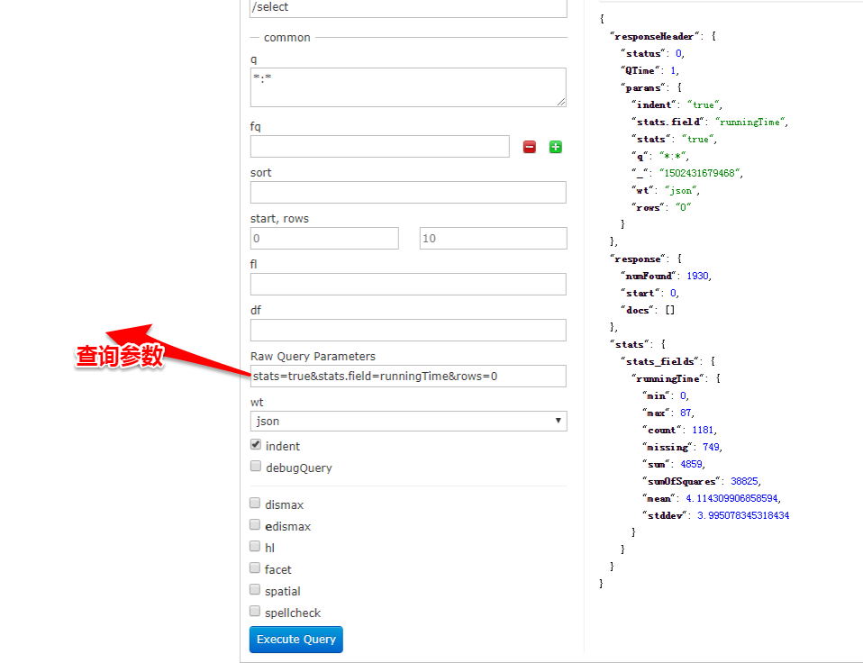
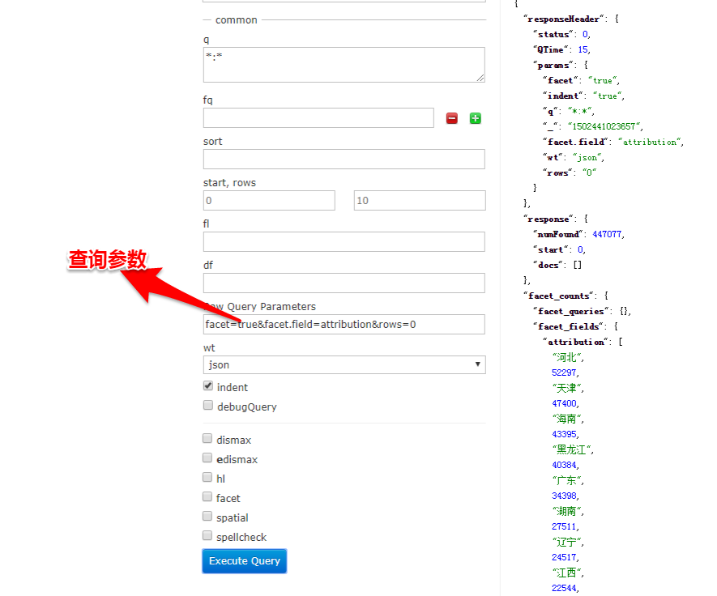
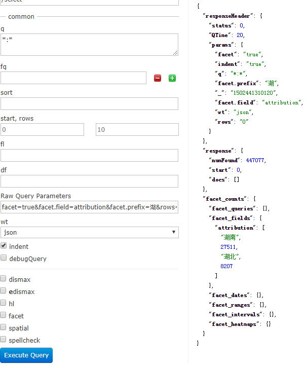

1.概述
最近项目中频繁的使用到solr进行数据分析和统计,solr的高级查询功能,facet,stats,group在此小结下solr的高级查询。
2.stats 查询
Solr可以利用StatsComponent 实现数据库的聚合统计查询，也就是min、max、avg、count、sum的功能，方便直观的统计一个字段或者多个字段在整个数据集的中总数，最大值，最小值等等信息。
请求参数说明：
参数 | 说明 |
stats | |
stats.field | 添加一个字段来统计，可以有多个 |
stats.facet | 在给定的面返回值的子结果。 |
返回参数说明：
返回字段 | 字段含义 |
min | 最小值 |
max | 最大值 |
sum | 总和 |
count | 记录数，也就是多少行记录 |
missing | 结果集中，有多少条记录是空值 |
sumOfSquares | 平方和（x1^2 + x2^2+xn^2） |
mean | 平均数（x1+x2+xn）/n |
stddev | 标准差 |
网页控制台查询方式:

注意：1 . 一定要有rows=0,不然就会查询结果集而不是进行统计。
2. 统计的字段要是数字类型的。
java查询方式:
private FieldStatsInfo statistics(String params,String field) {
CloudSolrClient client = appClient.getInstance(zkHost, collection);
SolrQuery query = new SolrQuery();
QueryResponse response = null;
FieldStatsInfo result = null;
try {
query.set("q", params);
query.set("stats", "true");
query.set("indent", "true");
query.set("rows", "0");
query.set("stats.field", field);
response = client.query(query);
if (response != null) {
Map<String, FieldStatsInfo> fieldStatsInfos = response.getFieldStatsInfo();
for (Map.Entry<String, FieldStatsInfo> entry : fieldStatsInfos.entrySet()) {
String key = entry.getKey();
FieldStatsInfo fieldStatsInfo = entry.getValue();
if (field.equals(key)) {
result = fieldStatsInfo;
break;
}
}
}
} catch (Exception e) {
logger.info("综合查询solr查询报错", e);
}
return result;
}
对于多字段进行统计，修改方法参数field为集合方式。stats统计的查询接收参数是 Map<String, FieldStatsInfo>,solrj api封装了相关方法进行操作。FieldStatsInfo对象可以对统计的结果集进行操作，取最大值，最小值，总数等等。
3.Facet 查询
facet 查询方便对一个或多个字段在不同区间的变化进行统计，常见的电商网站的品牌，地域，型号等参数统计等。facet统计查询要设置facet=true或者facet=on,
最简单的facet查询：facet=true&facet.field=attribution&rows=0,查询按地域各个地域的数据

过滤prefix查询：facet=true&facet.field=attribution&facet.prefix=湖&rows=0,查询按地域各个地域的数据只查询以湖子开头的省份

facet 参数说明：
字段 | 说明 |
facet.prefix | 限制constaints的前缀 |
facet.mincount | 限制constants count的最小返回值，默认为0 |
facet.sort | 排序的方式，根据count或者index |
facet.offset | 表示在当前排序情况下的偏移，可以做分页 |
facet.limit | constraints返回的数目 |
facet.missing | 是否返回没有值的field |
facet.query | 可以对任意的字段进行筛选，例如筛选时间段数据 |
由于项目中时间字段格式存储的不是solr的data类型,暂且没有用到 Date Facet 类型统计,待以后用到再做补充。
java 操作facet查询
/**
* 按字段的值进行分组统计
*
* @param params
* @param fields
* @return
*/
private List<FacetField> getFacetFields(String params, String[] fields) {
CloudSolrClient client = appClient.getInstance(zkHost, collection);
SolrQuery query = new SolrQuery();
QueryResponse response = null;
int length = fields.length;
try {
query.set("q", params);
query.setFacet(true);
query.setRows(0);
query.setFacetMinCount(1); // 设置返回的数据中每个分组的数据最小值，比如设置为0，则统计数量最小为0，不然不显示
for (int i = 0; i < length; i++) {
query.addFacetField(fields[i]);
}
response = client.query(query);
List<FacetField> facetFields = response.getFacetFields();
return facetFields;
} catch (Exception e) {
logger.info("综合查询solr查询报错", e);
}
return null;
}
List<FacetField> typeFacetFields = getFacetFields(params,new String[]{"attribution"});
List<Map<String, Object>> list = new ArrayList<Map<String, Object>>();
if (typeFacetFields != null && typeFacetFields.size() == 1) {
FacetField facetField = typeFacetFields.get(0);
List<Count> valueCounts = facetField.getValues();
for (Count count : valueCounts) {
long startNum = count.getCount();
String province = count.getName();
Map<String, Object> startDistribution = new HashMap<String, Object>();
startDistribution.put("name", province);
startDistribution.put("value", startNum);
list.add(startDistribution);
}
}
solrJ 对于facet统计和返回对象为List<FacetField>,此出是对单字段进行facet统计。如若多字段，解析结果代码需要重写。